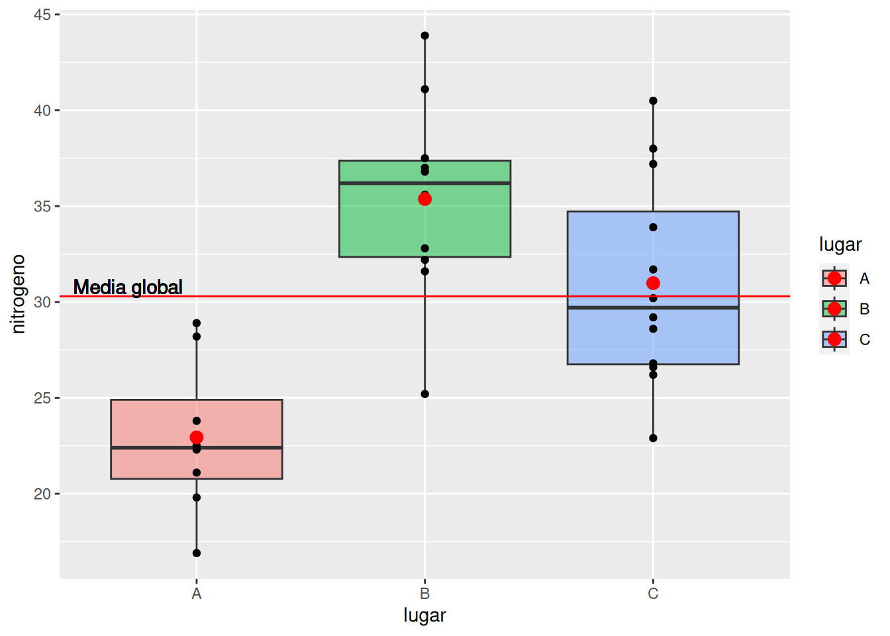
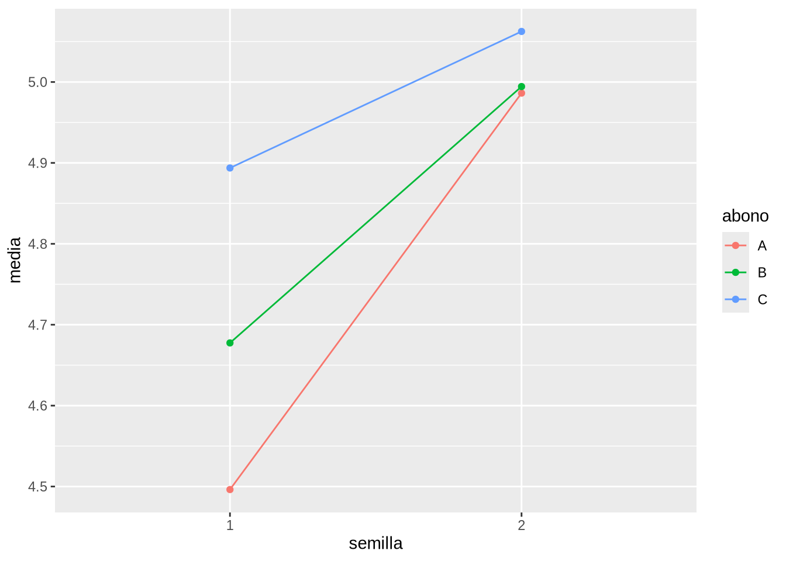
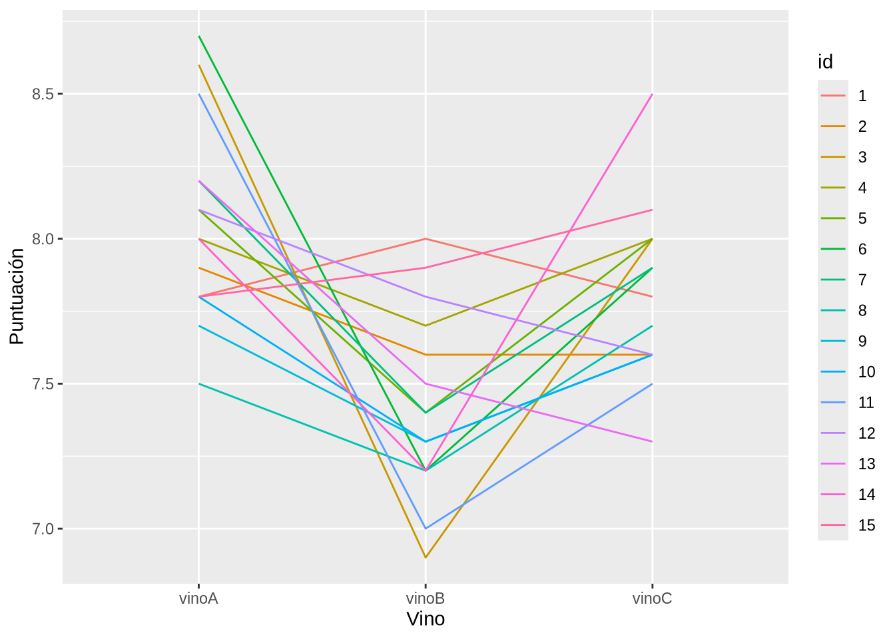
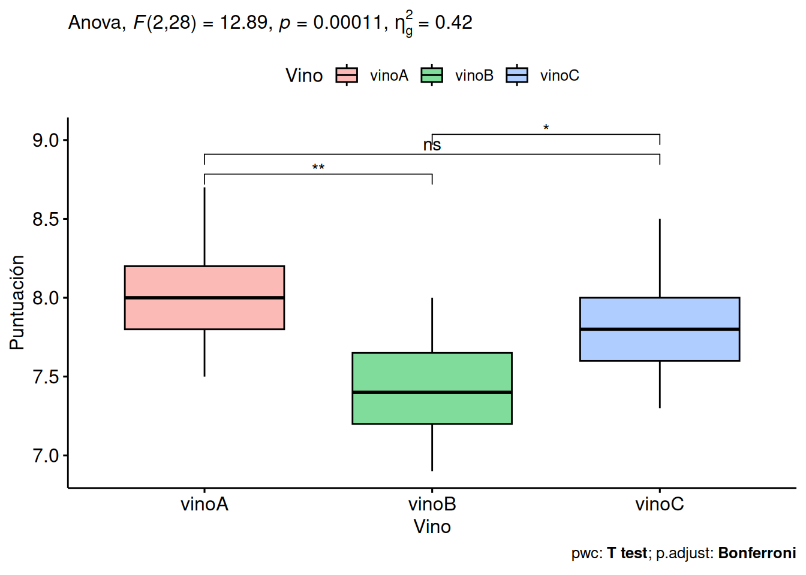

df <- data.frame(nitrogeno = c(19.8, 21.1, 28.2, 22.3, 22.5, 28.9, 23.8, 16.9, 31.6, 32.8, 41.1, 36.8, 37.0, 35.6, 32.2, 43.9, 37.5, 25.2, 37.2, 30.2, 26.6, 31.7, 26.8, 28.6, 29.2, 22.9, 38.0, 33.9, 26.2, 40.5),
lugar = rep(c("A", "B", "C"), c(8, 10, 12)))10 Análisis de la Varianza (ANOVA)
10.1 Ejercicios Resueltos
Para la realización de esta práctica se requieren los siguientes paquetes:
library(tidyverse)
# Incluye los siguientes paquetes:
# - dplyr: para el preprocesamiento y manipulación de datos.
# - ggplot2: para la creación de gráficos.
library(broom) # para convertir las listas con los resúmenes de los modelos de regresión a formato organizado.
library(rstatix) # para realizar ANOVAs de medidas repetidas y mixtos.
library(lme4) # para construir modelos lineales mixtos.
library(knitr) # para el formateo de tablas.Ejercicio 10.1 Se quiere comparar la contaminación por dióxido de nitrógeno (NO2) en tres lugares distintos de una ciudad \(A\), \(B\) y \(C\) y para ello se han medido las concentraciones de NO2 en cada lugar en una muestra aleatoria de días, obteniendo los resultados de la siguiente tabla.
\[ \begin{array}{lrrrrrrrrrrrr} \hline A & 19.8 & 21.1 & 28.2 & 22.3 & 22.5 & 28.9 & 23.8 & 16.9 \\ B & 31.6 & 32.8 & 41.1 & 36.8 & 37.0 & 35.6 & 32.2 & 43.9 & 37.5 & 25.2 \\ C & 37.2 & 30.2 & 26.6 & 31.7 & 26.8 & 28.6 & 29.2 & 22.9 & 38.0 & 33.9 & 26.2 & 40.5 \\ \hline \end{array} \]
-
Crear un conjunto de datos con los datos de la muestra.
Solución -
Dibujar el diagrama de cajas con los puntos correspondientes a las mediciones de cada lugar y sus medias. A la vista del diagrama, ¿crees que existen diferencias significativas entre los niveles de NO2 de los tres lugares?
Soluciónlibrary(tidyverse) media <- mean(df$nitrogeno) df |> ggplot(aes(x = lugar, y = nitrogeno, fill = lugar)) + geom_boxplot(alpha = 0.5) + geom_point() + stat_summary(fun = mean, geom = "point", size = 3, color = "red") + geom_hline(yintercept = media, color = "red") + geom_text(aes(x = 0.7, y = media + 0.5, label = "Media global") )
Como se puede apreciar en el diagrama existen diferencias muy claras entre los niveles de NO2 de los tres lugares, especialmente entre \(B\) y \(A\).
-
Realizar un contraste ANOVA para ver si hay diferencias estadísticamente significativas entre las concentraciones medias de NO2 de los tres lugares.
AyudaAntes de realizar el contraste de ANOVA hay que comprobar que se cumplen los supuestos del modelo ANOVA.
- Normalidad: Para comprobar la normalidad de la variable dependiente se puede utilizar el test de normalidad de Shapiro-Wilk mediante la función
shapiro.test. - Homocedasticidad: Para comprobar la homocedasticidad de las varianzas de los grupos de comparación se puede utilizar el test de Barlett de homogeneidad de varianzas mediante la función
bartlett.test. - Independencia: Para comprobar la independencia de las observaciones se puede utilizar el test de independencia de Durbin-Watson mediante la función
durbinWatsonTestdel paquetecar.
Para realizar un contraste ANOVA podemos usar la función
aovdel paquetestats.Otra opción es utilizar la función para ajustar modelos de regresión lineales
lmy pasarle el modelo a la funciónanovadel paquetestats.Si queremos mostrar la salida del test en formato de tabla podemos utilizar la función
tidydel paquetebroom.SoluciónComprobemos en primer lugar si se cumplen los supuestos del modelo ANOVA.
10.1.0.1 Normalidad
statistic p.value method 0.982475 0.8868395 Shapiro-Wilk normality test Como el p-valor es mayor que el nivel de significación \(\alpha=0.05\), no podemos rechazar la hipótesis nula de normalidad de los datos.
10.1.0.2 Homocedasticidad
bartlett.test(nitrogeno ~ lugar, data = df) |> tidy() |> kable()statistic p.value parameter method 0.7074 0.7020855 2 Bartlett test of homogeneity of variances Como el p-valor es mayor que el nivel de significación \(\alpha=0.05\), no podemos rechazar la hipótesis nula de homocedasticidad de las varianzas.
10.1.0.3 Independencia
Cargando paquete requerido: carDataAdjuntando el paquete: 'car'The following object is masked from 'package:dplyr': recodeThe following object is masked from 'package:purrr': somedurbinWatsonTest(aov(nitrogeno ~ lugar, data = df)) |> tidy() |> kable()statistic p.value autocorrelation method alternative 2.291765 0.676 -0.2191414 Durbin-Watson Test two.sided Como el p-valor es mayor que el nivel de significación \(\alpha=0.05\), no podemos rechazar la hipótesis nula de independencia de las observaciones.
Así pues, todas las condiciones del modelo ANOVA se cumplen, por lo que podemos realizar el contraste de comparación de medias que es
\[\begin{align*} H_0 &: \mu_A = \mu_B = \mu_C \\ H_1 &: \mbox{Existen diferencias entre al menos dos medias} \end{align*}\]Como el p-valor del contraste es \(0.00007\) que es mucho menor que el nivel de significación \(\alpha=0.05\), rechazamos la hipótesis nula y se concluye que existen diferencias estadísticamente significativas entre las concentraciones medias de NO2 de al menos dos lugares.
- Normalidad: Para comprobar la normalidad de la variable dependiente se puede utilizar el test de normalidad de Shapiro-Wilk mediante la función
-
Analizar los residuos del modelo ANOVA.
AyudaEl análisis de los residuos se suele realizar mediante la función
plot, pasándole como argumento el modelo ANOVA. Esta función dibuja cuatro diagramas, el de los residuos frente a las predicciones del modelo, el de los cuantiles de los residuos frente a los cuantiles normales (qqplot).SoluciónEl primer diagrama “Residuals vs Fitted” muestra si los residuos tienen tendencia lineal o no. En este caso, la línea roja que representa las medias es prácticamente horizontal por lo que se puede asumir que la tendencia es lineal.
El segundo diagrama “Normal Q-Q” muestra si los residuos siguen una distribución normal. En este caso los puntos se ajustan bastante bien a la línea recta, por lo que se puede asumir que los residuos siguen una distribución normal.
El tercer diagrama “Scale-Location” muestra si los residuos tienen una varianza constante (homocedasticidad). En este caso, la línea roja que representa la media de los residuos es prácticamente horizontal, por lo que se puede asumir que la varianza de los residuos es constante.
El cuarto diagrama “Residuals vs Leverage” muestra si hay observaciones influyentes en el modelo. En este caso, no hay observaciones que se salgan de la línea discontinua roja que representa el límite de influencia (distancia de Cook), por lo que no hay datos atípicos que sesguen el modelo.
-
Realizar un contraste post-hoc de comparación de las medias de N02 por pares. ¿Entre qué lugares existe una diferencia estadísticamente significativa en la concentración media de NO2?
AyudaPara realizar un contraste post-hoc de comparación de medias por pares podemos usar la función
TukeyHSDdel paquetestats.Otra opción es utilizar la función
pairwise.t.testdel paquetestatsque aplica la corrección de Bonferroni a los p-valores.Soluciónpairwise.t.test(df$nitrogeno, df$lugar, p.adjust.method = "bonferroni") |> tidy() |> kable()group1 group2 p.value B A 0.0000531 C A 0.0049147 C B 0.1558055 Existe una diferencia muy significativa entre la concentración media de NO2 de los lugares \(A\) y \(B\) (p-valor \(0.00005\)), y también entre los lugares \(A\) y \(C\) (p-valor \(0.0049\)), pero no entre los lugares \(B\) y \(C\) (p-valor \(0.1558\)).
Ejercicio 10.2 El fichero trigo.csv contiene información sobre la cosecha de trigo (en toneladas) obtenida para dos tipos de semillas y tres tipos de abonos (\(A\), \(B\) y \(C\)).
-
Crear conjunto de datos con los datos de la muestra a partir del fichero
trigo.csv.Soluciónlibrary(tidyverse) df <- read_csv("https://aprendeconalf.es/estadistica-practicas-r/datos/trigo.csv") |> mutate(semilla = factor(semilla), abono = factor(abono)) head(df)# A tibble: 6 × 4 semilla parcela abono cosecha <fct> <dbl> <fct> <dbl> 1 1 1 A 4.73 2 2 2 A 4.76 3 1 3 A 4.17 4 2 4 A 5.23 5 1 1 A 4.39 6 2 2 A 5.15 -
Realizar un contraste ANOVA para ver si la cosecha de trigo depende del abono. ¿Cuál es la varianza residual del modelo?
SoluciónTenemos que realizar el contraste
\[\begin{align*} H_0 &: \mu_A = \mu_B = \mu_C \\ H_1 &: \mbox{Existen diferencias entre al menos dos medias} \end{align*}\]Como el p-valor del contraste es \(0.0108\) que es menor que el nivel de significación \(\alpha=0.05\), rechazamos la hipótesis nula y se concluye que existen diferencias estadísticamente significativas entre las medias de las cosechas de trigo de los distintos abonos, y por tanto, la cosecha depende del tipo de abono.
La varianza residual del modelo es \(8.891\).
-
Realizar un contraste ANOVA para ver si la cosecha de trigo depende del abono y del tipo de semilla. ¿Cuánto se reduce la varianza residual al incluir el tipo de semilla en el modelo?
AyudaPara realizar un contraste ANOVA de dos factores sin interacción se puede utilizar tanto la función
aovcomo la funciónlmpero incluyendo la fórmula del modelovd ~ f1 + f2, dondevdes la variable dependiente,f1es el primer factor yf2el segundo.SoluciónTenemos que realizar el contraste ANOVA de dos factores sin interacción.
Como tanto el p-valor correspondiente a la semilla, que es prácticamente \(0\), como el correspondiente al abono, que es \(0.002\), son menores que el nivel de significación \(\alpha=0.05\), rechazamos la hipótesis nula y se concluye que la cosecha depende tanto del tipo de semilla como del tipo de abono.
Al incluir el tipo de semilla en el modelo, la varianza residual se reduce de \(8.8689\) a \(6.3528\), por lo que este modelo explica mejor la variabilidad de la cosecha.
-
Incluir en el modelo anterior también la interacción entre el tipo de semilla y el tipo de abono. ¿Es significativa la interacción entre los dos factores? ¿Cuánto se reduce la varianza residual al incluir la interacción en el modelo?
AyudaPara realizar un contraste ANOVA de dos factores con interacción se puede utilizar tanto la función
aovcomo la funciónlmpero incluyendo la fórmula del modelovd ~ f1 * f2, dondevdes la variable dependiente,f1es el primer factor yf2el segundo.SoluciónTenemos que realizar el contraste ANOVA de dos factores con interacción.
term df sumsq meansq statistic p.value semilla 1 2.5382510 2.5382510 38.464056 0.0000000 abono 2 0.9097896 0.4548948 6.893368 0.0016388 semilla:abono 2 0.4136396 0.2068198 3.134098 0.0483265 Residuals 90 5.9391188 0.0659902 NA NA term df sumsq meansq statistic p.value semilla 1 2.5382510 2.5382510 38.464056 0.0000000 abono 2 0.9097896 0.4548948 6.893368 0.0016388 semilla:abono 2 0.4136396 0.2068198 3.134098 0.0483265 Residuals 90 5.9391188 0.0659902 NA NA Al igual que antes, tanto el tipo de semilla como el tipo de abono son significativos en el modelo, pero además lo es su interacción ya que el p-valor correspondiente es \(0.0483\) que es menor que el nivel de significación \(\alpha = 0.05\).
Al incluir la interacción entre el tipo de semilla y el tipo de abono en el modelo, la varianza residual se reduce de \(6.3528\) a \(5.9391\), por lo que este modelo explica todavía mejor la variabilidad de la cosecha.
-
Realizar un diagrama de interacción entre los factores con las medias de los distintos grupos experimentales.
Solucióndf |> group_by(semilla, abono) |> summarise(media = mean(cosecha)) |> ggplot(aes(x = semilla, y = media, color = abono)) + geom_line(aes(group = abono)) + geom_point()`summarise()` has grouped output by 'semilla'. You can override using the `.groups` argument.
Como se aprecia en el diagrama, las líneas que unen las medias no son paralelas, lo que significa que hay interacción entre el tipo de semilla y el tipo de abono.
-
Realizar un contraste post-hoc para comparar las medias de los distintos grupos experimentales por pares. ¿Qué combinación de semilla y abono ofrece el mayor rendimiento de la cosecha?
SoluciónPrimero comparamos las medias de los grupos según el tipo de abono.
term contrast null.value estimate conf.low conf.high adj.p.value abono B-A 0 0.0946875 -0.0894244 0.2787994 0.4415513 abono C-A 0 0.2368750 0.0527631 0.4209869 0.0079604 abono C-B 0 0.1421875 -0.0419244 0.3262994 0.1625203 Se observa que solo hay una diferencia estadísticamente significativa entre las medias de las cosechas con los tipos de abono \(A\) y \(C\).
Ahora comparamos las medias de los grupos según el tipo de semilla.
term contrast null.value estimate conf.low conf.high adj.p.value abono B-A 0 0.0946875 -0.0894244 0.2787994 0.4415513 abono C-A 0 0.2368750 0.0527631 0.4209869 0.0079604 abono C-B 0 0.1421875 -0.0419244 0.3262994 0.1625203 Como solo hay dos grupos, solo hay una comparación posible, y se concluye hay diferencias significativas entre las medias de las cosechas con los tipos de semillas 1 y 2.
Finalmente, comparamos las medias de los grupos que surgen de la interacción del tipo de semilla con el tipo de abono.
term contrast null.value estimate conf.low conf.high adj.p.value semilla:abono 2:C-1:A 0 0.566250 0.3017713 0.8307287 0.0000002 semilla:abono 2:B-1:A 0 0.498125 0.2336463 0.7626037 0.0000055 semilla:abono 2:A-1:A 0 0.490000 0.2255213 0.7544787 0.0000080 semilla:abono 1:C-1:A 0 0.397500 0.1330213 0.6619787 0.0004539 semilla:abono 2:C-1:B 0 0.385000 0.1205213 0.6494787 0.0007519 semilla:abono 2:B-1:B 0 0.316875 0.0523963 0.5813537 0.0095145 semilla:abono 1:B-2:A 0 -0.308750 -0.5732287 -0.0442713 0.0125345 semilla:abono 1:C-1:B 0 0.216250 -0.0482287 0.4807287 0.1740364 semilla:abono 1:B-1:A 0 0.181250 -0.0832287 0.4457287 0.3529759 semilla:abono 2:C-1:C 0 0.168750 -0.0957287 0.4332287 0.4346043 semilla:abono 1:C-2:B 0 -0.100625 -0.3651037 0.1638537 0.8769068 semilla:abono 1:C-2:A 0 -0.092500 -0.3569787 0.1719787 0.9106159 semilla:abono 2:C-2:A 0 0.076250 -0.1882287 0.3407287 0.9592452 semilla:abono 2:C-2:B 0 0.068125 -0.1963537 0.3326037 0.9748943 semilla:abono 2:B-2:A 0 0.008125 -0.2563537 0.2726037 0.9999992 De más a menos significativas, se observa que hay diferencias estadísticamente significativas entre las medias de las cosechas de los grupos 2:C (semilla 2 y abono C) y 1:A (semilla 1 y abono A), entre los grupos 2:B y 1:A, entre los grupos 2:A y 1:A, entre los grupos 2:C y 1:B, entre los grupos 1:C y 1:A, entre los grupos 2:B y 1:B y ente los grupos 1:B y 2:A. Entre el resto de grupos no hay diferencias estadísticamente significativas.
A la vista del diagrama del apartado anterior, se observa que el mayor rendimiento se obtiene con el tipo de semilla 2 y el abono \(C\), seguido del tipo de semilla 2 y el abono \(B\), aunque la diferencia entre las medias de estos dos grupos no es significativa.
Ejercicio 10.3 El fichero cata-vinos.csv contiene información la puntuación obtenida por unos vinos en una cata realizada por 15 expertos.
-
Crear conjunto de datos con los datos de la muestra a partir del fichero
cata-vinos.csv.SoluciónRows: 15 Columns: 3 ── Column specification ──────────────────────────────────────────────────────── Delimiter: "," dbl (3): vinoA, vinoB, vinoC ℹ Use `spec()` to retrieve the full column specification for this data. ℹ Specify the column types or set `show_col_types = FALSE` to quiet this message.head(df)# A tibble: 6 × 3 vinoA vinoB vinoC <dbl> <dbl> <dbl> 1 7.8 8 7.8 2 7.9 7.6 7.6 3 8.6 6.9 8 4 8 7.7 8 5 8.1 7.4 8 6 8.7 7.2 7.9 -
Dibujar un diagrama de líneas las puntuaciones de cada catador.
Solucióndf_largo <- df |> # Generamos un identificador para cada individuo. mutate(id = 1:nrow(df)) |> # Convertimos el data frame a formato largo. pivot_longer(cols = -id, names_to = "Vino", values_to = "Puntuación") |> # Convertimos el id y el momento en factores. mutate_at(c("id", "Vino"), as.factor) # Dibujamos el diagrama de líneas. df_largo |> ggplot(aes(x = Vino, y = Puntuación, group = id, color = id)) + geom_line()
A primera vista, parece que las puntuaciones del vino B son más bajas.
-
Realizar un contraste ANOVA para ver si hay diferencias estadísticamente significativas entre las medias del peso en los tres momentos.
AyudaPara realizar un contraste ANOVA de medidas repetidas se puede utilizar la función
aovdel paqueteStatsintroduciendo en el modelo el termino de errorError(id/Vino).También se puede utilizar como la función
anova_testdel paqueterstatix, introduciendo la variable dependiente en el argumentodv, la variable identificadora en el argumentowidy la variable de medidas repetidas en el argumentowithin.SoluciónTenemos que realizar el contraste ANOVA de medidas repetidas ya que los tres vinos se catan por las mismas personas.
Adjuntando el paquete: 'rstatix'The following object is masked from 'package:stats': filteranova <- anova_test(data = df_largo, dv = Puntuación, wid = id, within = Vino) get_anova_table(anova) |> kable()Effect DFn DFd F p p<.05 ges Vino 2 28 12.888 0.000108 * 0.415 Cargando paquete requerido: MatrixAdjuntando el paquete: 'Matrix'The following objects are masked from 'package:tidyr': expand, pack, unpacklmer(Puntuación ~ Vino + (1|id), data = df_largo) |> anova(data.frame(ames = NULL, check.rows = FALSE, check.names = TRUE, stringsAsFactors = default.stringsAsFactors())) |> tidy() |> kable()boundary (singular) fit: see help('isSingular')Warning in anova.merMod(lmer(Puntuación ~ Vino + (1 | id), data = df_largo), : additional arguments ignoredterm npar sumsq meansq statistic Vino 2 3.048444 1.524222 14.90624 Como el p-valor del contraste es \(0.0001 < 0.05\) podemos rechazar la hipótesis nula de igualdad de medias y concluimos que existen diferencias significativas entre las puntuaciones medias de al menos dos vinos.
-
Realizar un contraste de comparación de medias por pares para ver entre qué vinos existen diferencias estadísticamente significativas en la puntuación media.
AyudaPara realizar un contraste post-hoc de comparación de medias por pares podemos usar la función
pairwise.t.testdel paquetestatsque aplica la corrección de Bonferroni a los p-valores.Soluciónpwc <- df_largo |> pairwise_t_test(Puntuación~Vino, paired = TRUE, p.adjust.method = "bonferroni") pwc |> kable().y. group1 group2 n1 n2 statistic df p p.adj p.adj.signif Puntuación vinoA vinoB 15 15 4.349100 14 0.000667 0.002 ** Puntuación vinoA vinoC 15 15 2.227053 14 0.043000 0.129 ns Puntuación vinoB vinoC 15 15 -3.312258 14 0.005000 0.015 * A la vista de los p-valores de la comparación por pares existe una diferencia estadísticamente muy significativa entre el la puntuación media de los vinos A y B (p-valor 0.002 < 0.01), y una diferencia estadísticamente significativa entre las puntuaciones medias de los vinos B y C (p-valor 0.015 < 0.05), pero no existe una diferencia estadísticamente significativa entre la puntuación media de los vinos A y C (p-valor 0.129 > 0.05).
-
Dibujar los diagramas de cajas de las puntuaciones de los tres vinos, mostrando las diferencias significativas entre los vinos.
Soluciónlibrary(ggpubr) pwc <- pwc |> add_xy_position(x = "Vino") ggboxplot(df_largo, x = "Vino", y = "Puntuación", fill = "Vino", alpha = 0.5) + stat_pvalue_manual(pwc) + labs( subtitle = get_test_label(anova, detailed = TRUE), caption = get_pwc_label(pwc) )
10.2 Ejercicios propuestos
Ejercicio 10.4 La tabla siguiente contiene las notas medias en la prueba de acceso a la universidad (EVAU) de una muestra de alumnos de los cinco institutos de una ciudad.
\[ \begin{array}{ccccc} \hline \mbox{Instituto 1} & \mbox{Instituto 2} & \mbox{Instituto 3} & \mbox{Instituto 4} & \mbox{Instituto 5} \\ 5.5 & 6.1 & 4.9 & 3.2 & 6.7 \\ 5.2 & 7.2 & 5.5 & 3.3 & 5.8 \\ 5.9 & 5.5 & 6.1 & 5.5 & 5.4 \\ 7.1 & 6.7 & 6.1 & 5.7 & 5.5 \\ 6.2 & 7.6 & 6.2 & 6.0 & 4.9 \\ 5.9 & 5.9 & 6.4 & 6.1 & 6.2 \\ 5.3 & 8.1 & 6.9 & 4.7 & 6.1 \\ 6.2 & 8.3 & 4.5 & 5.1 & 7.0 \\ \hline \end{array} \]
Dibujar el diagrama de cajas y puntos de las notas de cada centro con sus respectivas medias. ¿Se observan diferencias entre los centros en el diagrama?
Realizar un contraste ANOVA para ver si hay diferencias estadísticamente significativas entre las notas medias de los cinco centros.
Realizar un contraste post-hoc de comparación de las medias de las notas de los cinco centros por pares. ¿Entre qué centros existen diferencias estadísticamente significativas en la nota media?